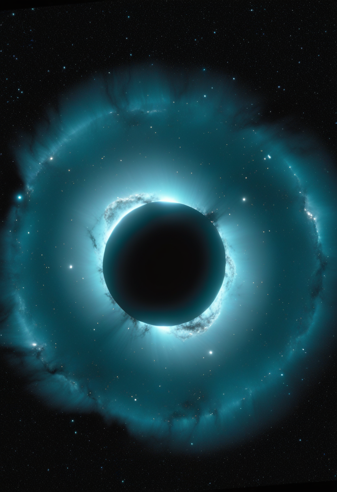
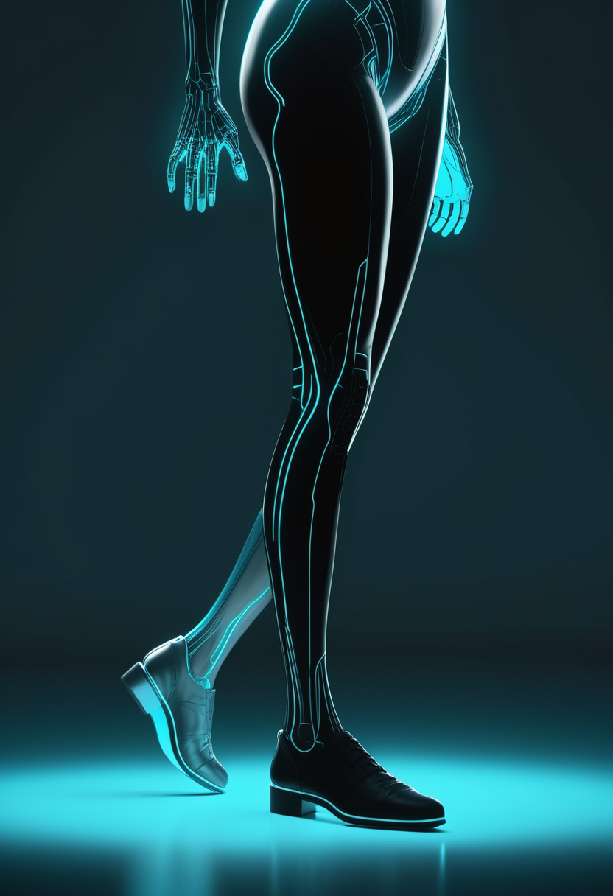
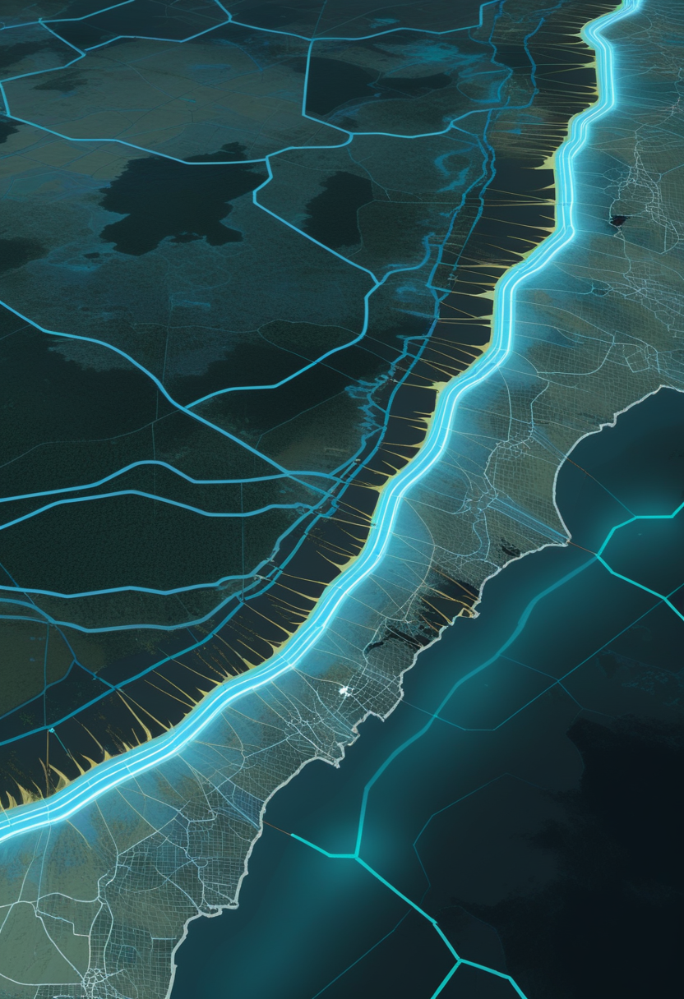

ルービン天文台が天の川銀河の新しい伴星系を2つ報告。スタンフォード大のデジタル脳計画には訂正あり、ゾルゲンスマは規制当局が調査を始めた。

チリのヴェラ・C・ルービン天文台が2025年4月〜2026年1月に撮影した試験データ(全天の約7%をカバー)から、天の川銀河の新しい伴星系2つを報告する論文が今週相次いで発表された。1つは『Aquarius IV』──地球から約35万5,000光年(109キロパーセク)の外側ハローにある、きわめて暗く小さな天体で、既知の超低光度矮小銀河に近い性質を持つが球状星団の可能性も否定されていない(観測データの解析をまとめたプレプリントは8月に公開され、今週研究速報として正式掲載された)。もう1つは天の川銀河の反対側で塵に隠れた球状星団『Rubin-Gc1』(筆頭著者Aashay Pai氏、The Astrophysical Journal Lettersに掲載)。ルービン天文台は2026年6月に10年間の本観測『LSST』を始めており、こうした発見は今後100個近くに増える可能性があると研究者は見ている。
前号で伝えたゾルゲンスマ(SMA遺伝子治療)治療後の腫瘍報告9件(2件でAAV9ベクターDNAの組み込みの証拠)について、欧州の患者団体SMA Europeは11/5、『規制当局が現在これらの症例を調べている』とし、家族にとって『深く心配な』報告だと声明を出した。米国の患者団体Cure SMAも、腫瘍の検査が済んだのは9人のうち3人だけだと説明しており、この人数自体は英国の患者団体SMA UKが11/4に伝えた内容と同じ(前号既報)。治療を受けた人は世界で6,000人を超えるが、9件の報告だけで確かな発生率を計算することはできない。米FDAが調査を始めたとの報道もあるが1社のみで確認できていない(未確認)。日本では2歳以上向け髄注版が2026年4月に承認済みだが、今回の報告との関連や、PMDA・ノバルティス ファーマからの新しい発表は今号でも確認できなかった。遺伝子治療は『一度きり』だからこそ、治療を受けた家族は主治医との経過観察の計画を確認したい。
ゾルゲンスマは規制当局の検討待ちの段階に入った。次の焦点は当局の見解と添付文書の見直し。

イーロン・マスク氏は11/7、Neuralinkの脳インプラントによって『今後数年のうちに』人が再び歩いたり手を使えたりするようになると述べた。ただし、同社の臨床試験でこれはまだ示されていない。視覚回復をめざす『Blindsight』についても10/30に『技術的には準備ができ、規制当局の承認待ち』としたが、11/2時点で米国の臨床試験登録に該当する試験は見当たらず、最初の手術の日付も発表されていない(11/4号既報の『試験はまだ未登録』から変化なし)。Blindsightが持つのは2024年9月の『ブレークスルー機器』指定で、承認ではない。公式な被験者数は2026年1月の21人が最後の発表で、独自集計では27人以上とされる(要確認)。
新浪財経(11/2)によると、侵襲型BCIを手がける上海の主動科技がエンジェル+ラウンドで4.64億元を調達した。2026年上半期の中国国内BCI企業の調達額は合計70億元を超えたとの見積もりもある。中国の第15次5か年計画の要綱は、BCIを量子技術・核融合などと並ぶ『6大未来産業』の一つに位置づけている。同時期に報じられた君柔科技の約1億元調達(高瓴創投が参加)は11/3号で既に伝えた。視線入力(Tobii Dynavoxなど)の新しい製品・試験の発表は今号でも確認できなかった。
米国は『大きな約束』、中国は『資金の集中』が目立つ週。どちらも人での確かなデータはまだ少ない。

欧州疾病予防管理センター(ECDC)によると、11/5時点でコンゴ民主共和国(DRC)の確定例は計10,741例、関連死者は5,230人(11/4までのデータ)。感染が確認された州は震源のイトゥリ州・北キブ州に加え、南キブ・トショポ・オー・ウエレ・バ・ウエレ・南ウバンギ・北ウバンギの計8州に広がった。なお前号で伝えた米CDC推定(約1万700例・死者5,372人)とは集計機関・時点が異なり、DRC当局が死者データを遡って整理した経緯もあるため単純な増減比較はできない。ブンディブギョ型エボラには承認されたワクチンや治療薬がまだなく、専用ワクチン2種の試験開始が待たれる。
ケニア保健省は11/3、ブンディブギョ型エボラの患者5人(ナイロビの2病院で治療中だった男性5人)が検査で回復を確認され退院したと発表した。入院しているのは残り2人のみ。濃厚接触者も11/3に46人が21日間の監視期間を終えて解放され、残る52人も11/11までに解放される見込み。確定例は9例・死者2例のまま新規報告はなく、最後の確定例は10/20。全員が退院・回復するか死亡した後、42日間新たな感染がなければ流行終息が宣言される。
エボラはDRCで感染地域が広がる一方、ケニアは終息に近づいている。来週のPAHOの麻疹審査判断が次の大きな焦点。
今日の一本の詳細。ワシントン大学(11/5)とINAF(11/3)の発表によると、ヴェラ・C・ルービン天文台の試験データ(2025年4月〜2026年1月撮影、全天の約7%をカバー)から2つの伴星系が見つかった。『Aquarius IV』は地球から約35万5,000光年の外側ハローにある超低光度の天体で、星の色から年齢は約130億年と推定される(報道ベースで一次論文には年齢の記載なし)。最も可能性が高いのは矮小銀河だが、球状星団の可能性も完全には否定されておらず、追加の分光観測が必要という。もう1つの球状星団『Rubin-Gc1』は銀河の反対側、塵に隠れた領域で見つかった。ルービン天文台は2026年6月に本観測を開始しており、既知の衛星約65個に対し、今後100個近くの新発見が見込まれている。
中国科学技術大学が開発した光量子計算の試作機『九章四号』が11/2、2026年世界インターネット大会の『領先科技賞』(全20件)に選ばれた。1,024個の量子圧縮状態を入力し、8,176のモードで3,050個の光子の量子状態を操作・検出する性能自体は2026年5月にNature誌で報告済み(8月号・9月号で既報)で、特定の問題(ガウス・ボソン・サンプリング)で1サンプルを25マイクロ秒で作れるのに対し世界最速のスーパーコンピューターでは10の42乗年以上かかるとされる。今回新たなのは受賞という節目で、役に立つ一般的な計算ができる段階ではない点に変わりはない。
ルービン天文台は本格的な発見ラッシュの入り口に立ち、量子では中国が『受賞』という形で存在感を示した週。
スタンフォード大(Wu Tsai神経科学研究所)は11/2、さまざまな脳画像データで学習する『大規模脳モデル』により脳の反応を予測する全学的な計画『Stanford Digital Brain Project』を発表した(11/3号既報)。主導するのはダン・ヤミンス氏とラス・ポルドラック氏で、人文科学・医学・工学の各学部からおよそ十数人の研究者が参加し、今後5年間かけて7テスラのfMRIとウェアラブル型の脳磁計(OPM-MEG)でデータを集める計画。データはOpenNeuroで共有し、計算にはスタンフォードのGPUクラスタ『Marlowe』を使う。資金は投資家のマーク&メアリー・スティーブンス夫妻が主導し、慈善家クララ・ウー・ツァイ氏が追加で提供したが、総額は非公表。⚠️訂正: 11/3号で『Metaが1,500万ドルを出資し9チーム・90人超を計測する』と伝えた数字は、The Transmitter誌が当初混同していたもので、実際はスタンフォードの計画とは別にMetaが2026年4月に始めた同名『デジタル脳プロジェクト』(The Transmitter誌が11/4付で訂正)の数字だった。コロンビア大のニコラウス・クリーゲスコルテ氏は、似た名前の計画が独立に2つ生まれたことを『とても時宜を得ている』と評した。
Quanta Magazine(11/4)は、言語モデルの内部に人工的な『考え』を注入し、モデルがそれに気づけるかを調べる研究を取り上げた。手法はAnthropicの研究者ジャック・リンジー氏が2025年に考案したもの。Anthropic自身は、Claudeに『ある程度の内省的な気づき』の証拠があるとしつつ、モデルの説明が作り話かどうかの区別は難しいとしている。NYUの研究者は『人間は内面を語るので、AIはそれをまねているだけかもしれない』と指摘し、別の研究は気づく能力は見かけより限られるとした。記事は、これが主観的な体験があることを示すものではないと明記している。
國學院大學の池田善文教授と長崎県松浦市教育委員会の共同調査で、1281年の弘安の役で沈んだとみられる元(モンゴル)側の船の3隻目が高島沖で確認された(2011年・2015年に続く)。全長約30メートルで船内に居住区があり、艦隊の旗艦だった可能性がある。船内からサイコロ5個と、麻雀の前身とされる中国起源のゲーム『コッパイ』用の小さなカード29枚が見つかった。池田教授は、これらの発見が戦時下の人々の娯楽や日常生活を垣間見せるとしている。
スタンフォードの計画は訂正を経てより正確な姿になり、AIの内省研究と元寇の沈没船は、どちらも『まだ分からないことを誠実に残す』報告だった。
今号はヴェラ・C・ルービン天文台が報告した、天の川銀河の新しい伴星系2つの話から始まった。ゾルゲンスマは規制当局の調査が始まり、中国のBCIは資金が集まり、スタンフォードのデジタル脳計画は訂正を経て輪郭がはっきりした。見えなかったものに気づき、間違いに気づいて直す——今号を通じて共通していたのはその姿勢だった。
では、おやすみなさい。また明日の朝刊で。